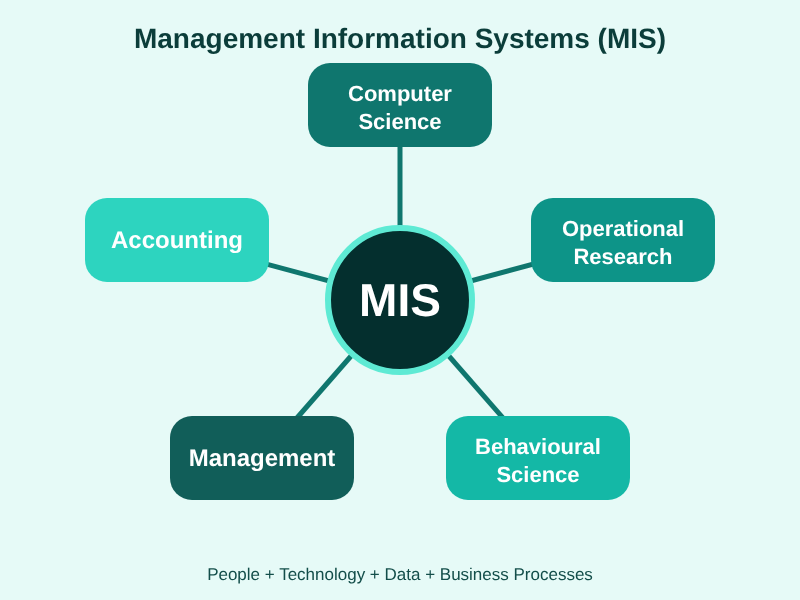

MIS & AI EthicsWebsite OverviewMaryum ZamanOctober 24, 2026 My Overview: Management Information Systems (MIS) connect people, technology, and data so that organizations can make smarter decisions. This website explores how businesses use MIS every day to track sales, manage inventory, and share information. Another powerful tool is Artificial Intelligence (AI), which is changing MIS by finding patterns in data much faster than a person could. Along with the benefits, we must talk about ethics, because students and employees can misuse AI by copying work they did not create. Another important topic is security, since hackers and malware threaten the information that every system depends on. I hope visitors leave knowing that responsible use of AI is just as important as the technology itself. AI-Polished Version: Management Information Systems (MIS) bring together people, technology, and data to help organizations make better decisions. This website shows how businesses depend on MIS daily to track sales, manage inventory, and share information across teams. It also explores how Artificial Intelligence (AI) is transforming MIS by uncovering patterns in data far faster than any person could. Alongside these benefits, ethics matters, because students and employees may misuse AI by submitting work they did not create. Security is equally important, since hackers and malware threaten the information that every system relies on. Ultimately, visitors should come away understanding that responsible AI use is just as vital as the technology itself.
|